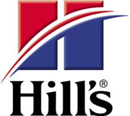
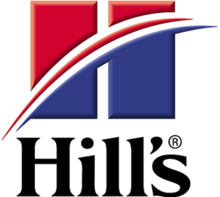

Een geleidehond voor u?
Bent u blind of zeer slechtziend, dan is een geleidehond misschien de oplossing voor u. Is het volgende voor u van toepassing: Een geleidehond biedt u onafhankelijkheid. Door hem hebt u de vrijheid om op stap te gaan waar en wanneer u wilt zonder op de hulp van andere personen aangewezen te zijn. U loopt veiliger, meer ontspannen en u hebt altijd een trouwe vriend aan uw zijde.
- U bent blind of zeer slechtziend.
- U bent goed te been en u kunt zich buitenshuis goed oriënteren.
- U kunt zelfstandig een aantal trajecten lopen.
- U wilt graag mobieler en zelfstandiger zijn.
- U houdt van honden.
- U beschikt over het nodige werkaanbod voor de hond.
- Dan is een geleidehond inderdaad misschien iets voor u!
Na twintig jaar zijn deze begrippen nog altijd geldig voor de werking van Scale Dogs.
 
